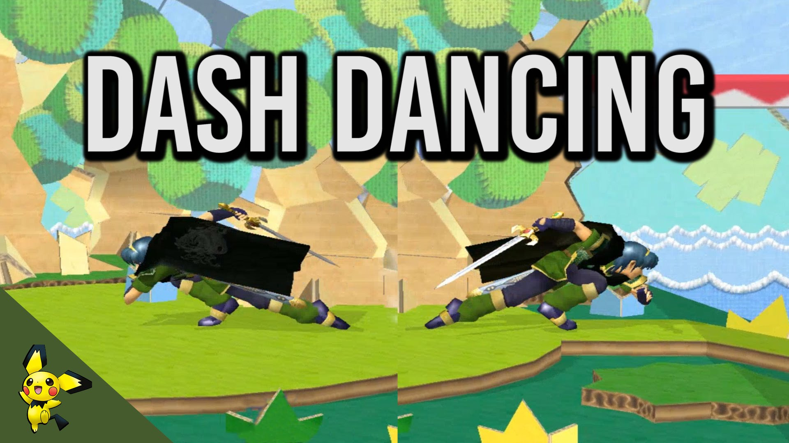

Wavedashing is a movement option that allows the character to slide a short distance across the stage. This is done by air dodging (pressing the L or R button in the air) diagonally into ground. This movement option is seen as important in the competitive scene as it allows for character positioning and the ability to do grounded attacks during slide. The length of the wavedash varies between characters with Luigi having the longest and Peach having the shortest.

Dash dancing is a technique that involves the character dashing from left and right. The main application for this movement is to play a mindgame with the opponent to condition them to do certain things, such as throwing out unsafe moves.
